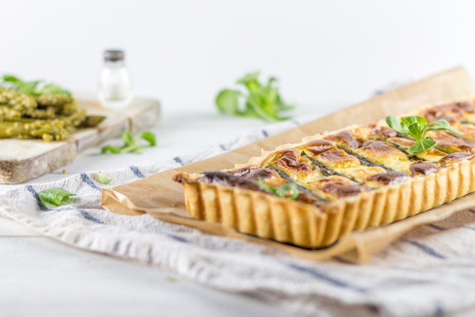
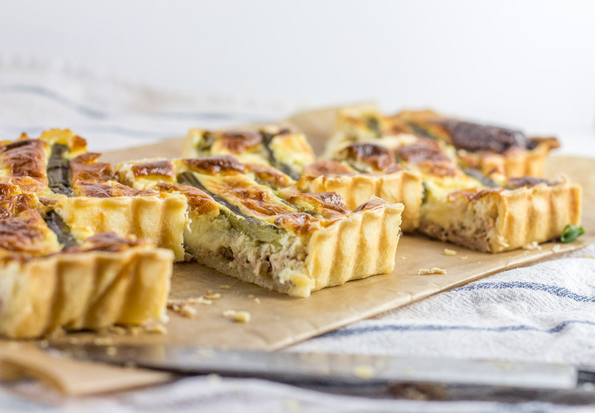
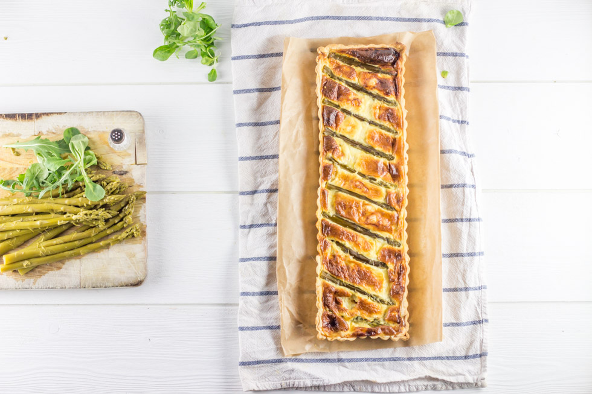

Tarte allégée asperge thon et fromage Merzer

Aujourd’hui je vais vous parler d’une recette allégée qui ne fait pas de mal de temps en temps et surtout en ce moment!!
Vous pouvez appeler cette tarte allégée « quiche allégée » car dans les faits il s’agit d’une quiche pour la préparation mais qui a cuit dans un moule à tarte (mon préféré qui plus est) alors c’est comme vous voulez! Vous l’aurez constaté en parcourant mon blog, je ne suis pas une fille à « régime » (pas du tout même^^ la vie est trop courte pour que l’on se prive ne serait-ce qu’un seul jour) pourtant, je suis comme chacune d’entre nous à savoir que je ne veux pas grossir (davantage) et encore moins avant l’été… 😉 Diminuer mes portions, « non merci », sauter un repas, « non merci », faire un régime pendant 3 mois, perdre 15kg et tout reprendre l’hiver d’après, « non merci », m’inscrire à des programmes promettant monts et merveilles « non merci »….. enfin bref vous l’aurez compris toutes ces solutions (qui marchent surement chez d’autres) ne sont pas faites pour moi.
Personnellement je ne me prive de rien, je mange quand j’ai faim et je me ressers si j’ai envie (bon je ne m’enfile pas non plus trois mégas fondants au chocolat par jours ^^ il faut rester raisonnable quand même). Alors voila pour ne pas « grossir », je fais du sport et de temps en temps je fais des recettes un peu plus lights que d’habitude notamment en semaine (car oui, le week-end c’est « l’orgie ») alors je ne perds pas de poids mais je n’en prends pas non plus et c’est comme ça que j’ai trouvé mon équilibre. C’est d’ailleurs pour ça que j’ai créé une catégories « recettes lights » pour ces recettes qu’il m’arrive de faire de temps en temps pour me donner bonne conscience 😉
Cette recette fait donc partie de mes recettes un peu plus allégées que j’ai eu plaisir de cuisiner il y a quelques jours. Sous forme de tarte aux asperges, cette quiche est donc composée de crème « allégée », de thon, d’asperges vertes mais aussi de fromage « allégé ». Je déteste (et j’insiste vraiment sur le mot dé-tes-ter) les produits allégés, à 0% de Mg, sans sucre etc. car je trouve qu’ils ont un goût qui me dérange je ne sais pas comment l’expliquer. J’ai tout de même tenu à goûter le fromage Merzer, recommandé par weight watchers et contenant seulement 12% de Mg sans trop y croire au départ. Car il faut se l’avouer, le fromage dans une tarte est l’aliment qui contient le plus de calories^^. J’ai donc testé… et j’ai été vraiment agréablement surprise (je ne vous en parlerez pas sinon!). Pas de goût désagréable, une forte odeur comme un vrai fromage, une pâte souple et très tendre bref j’ai donc décidé d’intégrer ce fromage à ma tarte allégée et ce fut une réussite car nous nous sommes vraiment régalés! Si d’aventure vous étiez intéressés par d’autres recettes avec ce fromage je vous invite à aller ICI il y en a de très appétissantes!! Mon chéri et moi même aimons beaucoup verser un peu de yaourt (type yaourt bulgare) sur le dessus de nos quiches mais c’est totalement facultatif bien que cela apporte un petit quelque chose en plus mais c’est très personnel^^
Je vous laisse à présent découvrir ma recette et j’espère qu’elle vous plaira.
Ingrédients
- Asperges vertes - 10
- Crème liquide allégée - 300ml
- Pâte brisée ou sablée
- Oeufs - 2
- Fromage Merzer - 150g
- Thon - 140g
- Noix de muscade - une pincée
Instructions
- Préchauffer le four à 180°
- Étaler votre pâte dans un moule à tarte (recette ICI)
- Dans un bol, mélanger la crème et les œufs
- Saler, poivrer et ajouter une pincée de noix de muscade
- Ajouter le thon émietté
- Verser dans le moule à tarte
- Couper le fromage en petits morceaux et ajoutez en uniformément pour qu'il y en ai partout dans la tarte
- Couper 10 asperges de manière à ce qu'elles fassent la taille de votre moule (pelez les si nécessaire)
- Faites-les cuire de 5 à 10 minutes dans un grand volume d'eau bouillante salée (selon la grosseur des asperges) puis égouttez-les sur du papier absorbant.
- Enfourner pour 50 minutes à 180°
- Servir chaud ou froid accompagné par exemple d'une petite salade!



Les tips de la communauté
Tarte bien reçue par les adeptes de Weight Watchers et des recettes équilibrées, appréciée pour la combinaison asperge-thon-fromage. Plusieurs commentaires soulignent l'approche équilibrée sans restriction excessive de plaisir gustatif.
Astuces
- Fromage Merzer pauvre en matières grasses recommandé
- La cancoillote peut être une excellente alternative au fromage pauvre en MG
- Recette compatible avec les approches équilibrées type Weight Watchers
- Recette de pâte utilisée est efficace et réutilisable
Variantes suggérées
- Remplacer le fromage par de la cancoillote
- Utiliser d'autres légumes saisonniers selon les préférences